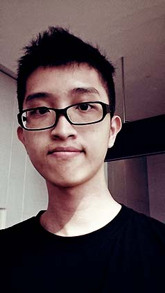

(ﾉ◕ヮ◕)ﾉ* Hello World!
My name is Law Chin Hao (Kevin Law).
I am a Malaysian Chinese born in year 1991.
My hometown is Seremban, Negeri Sembilan, Malaysia.
I am a freelance designer/developer and currently looking for full time job.
I have a Software Engineering degree and more than five years experience in web development.
I like to drink coffee and milk tea.
My favorite food are bacon, pizza, satay and clams (we called it "Lala" in Malaysia).
Beef, lamb and sushi are no-no to me.
I like Indie Pop, Jazz, Trance and Progressive House music.
Sci-fi film are my favorites, especially films by Christopher Nolan.
I am a casual DoTA 2 player, definitely not a pro.
I like taking photographs and listen to music.
I don't play music instruments, but I did enjoy composing music using Fl Studio.